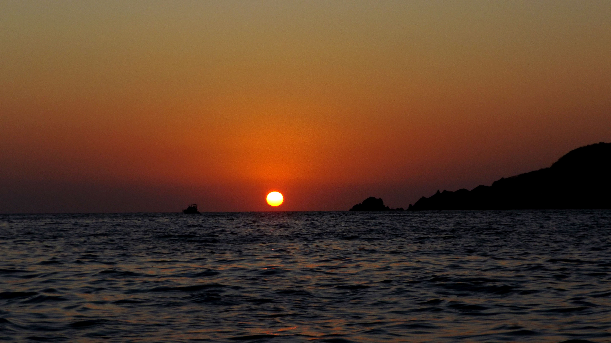
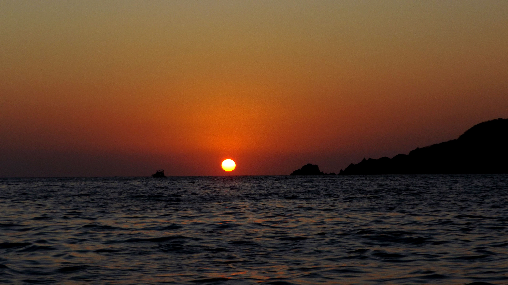

Nací en Puebla el 31 de Enero de 1999, actualmente tengo 23 años, radico en el Estado de Puebla, tengo 3 hermanos la cual ya son mayores, soy la menor y la verdad es que amor en la familia, no me falta, tanto mis padres como ellos han cuidado de mi muy bien. Actualmente curso la universidad en la carrera de Diseño Gráfico en la BUAP en la facultad de Arquitectura, en el coleegio de Diseño Gráfico, especificando ya que la facultad cuenta con tres colegios. Mis actividades de descanso o que más difruto son las de leer, jugar Warzone, cocinar, jugar ajedrez o algún tipo de juego de mesa escuchar música; rock tanto en español como inglés, jazz, reggae, tecnho. Me gustan las fiestas pero soy moderada en ello y en parte que no siempre tengo dinero para las fiestas jaja. Los temas de astronomía, diseño, arquitectura, manualidades, moda, son gustos que me impulsan a hacer una labor social. En deportes me gustan el béisbol, la natación, el skateboarding, futbol flag, hasta ahora son los que he practicado, a excepción del béisbol ya que esa actividad es de mi papá, sin emargo nos pasó ese gusto.
Mis gustos
Entre las cosas que más me gustan y las que disfruto hacer, entran:
- Fotografía
- Astronomía (El cual amo ver el cielo nocturno desde un telescopio)
- Dibujar
- Pintar
- Leer
- Bailar
- Cantar
- Comer
- Cocinar
- Ver películas
Fotografías de mi autoría
 



Fotografías con telescopio